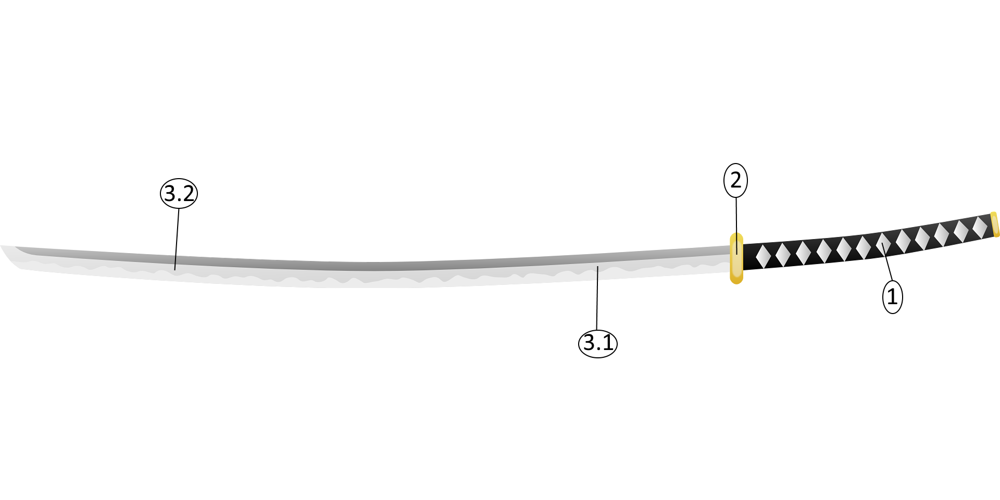

Nós da DoA (Design of Art) somos responsavéis pelo desenvolvimento e produção da Katanacel. Um pincel em forma de uma arma tradicional japonesa, para que a produção seja tão importante quanto o produto, à aqueles surrealistas de plantão.
Ao lado, uma imagem representativa da Katanacel. Ela foi desenvolvida com o objetivo de trazer uma nova forma de produção de uma obra de arte, trazendo uma ferramenta exótica para a pintura. Foi aí que tivemos a ideia da Katanacel. Uma espada tradicional japonesa conhecida no mundo todo, a Katana, transformada em um pincel longo para o artista se sentir como um samurai fazendo uma pintura. |

Em cima, uma imagem representativa da Katanacel. Sua composição é: (1) uma empunhadura de metal, (2) uma guarda de metal, as cerdas do pincel que ocuparão a parte de corte da espada, (3.1) a metade mais perto da guarda será bem mais robusta (afim de que pareça realmente uma katana) e a (3.2) outra metade, conforme vai chegando na ponta, ela vai ficando um pouco menos robusta, para que seja mais fácil de pintar com precisão. As cerdas são feitas de uma material sintético com, na sua composição, um pouco de metais maleaveis.